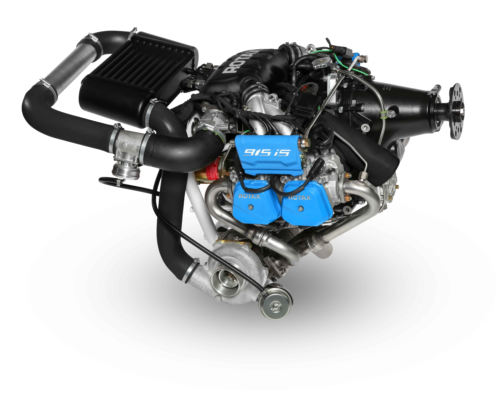
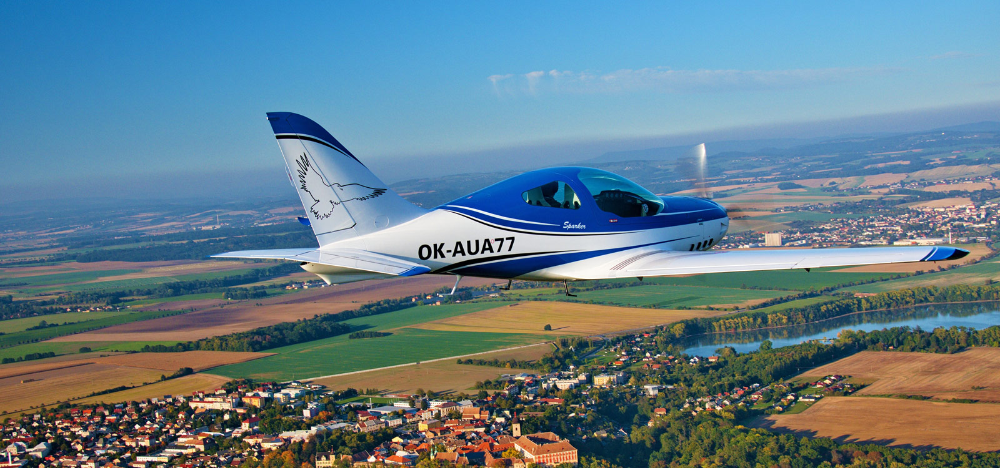
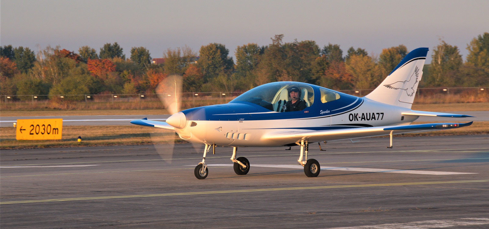

Powerful, safe, comfortable, and very spacious; these are the attributes that characterize the newest modern aircraft from the
TL-ULTRALIGHT, s.r.o. the Sparker.
With Sparker, you'll have an elaborate and spacious cockpit. You’ll enjoy the look and feel that this modern design offers. Forget the
pre-flight dilemma, with how much luggage you will be able to take. Sparker has the largest luggage compartment in the UL category. And because the compartment is accessible through exterior doors, it‘s convenient. As a result, you can sit back and enjoy your journey. That's why we created Sparker.
TL-ULTRALIGHT, s.r.o. the Sparker.
With Sparker, you'll have an elaborate and spacious cockpit. You’ll enjoy the look and feel that this modern design offers. Forget the
pre-flight dilemma, with how much luggage you will be able to take. Sparker has the largest luggage compartment in the UL category. And because the compartment is accessible through exterior doors, it‘s convenient. As a result, you can sit back and enjoy your journey. That's why we created Sparker.
One old aviation truth says a plane flies as good as it looks. The Sparker takes that adage and makes it a reality.
She looks great and won't disappoint in the air. Through modern technology, we have created a versatile airframe that is both elegant and aerodynamically efficient. The result is large interior spaces for both crew and luggage.
Watching the Sparker fly you can feel the anticipation and adrenalin that piloting the aircraft will bring. In the air, she becomes a predator that excels in speed and agility. The view from the cabin is spectacular. Thanks to modern avionics and imaging capabilities, Sparker has expanded situational awareness. Just as a predator is aware of their environment, you'll be aware of yours with the Sparker.
She looks great and won't disappoint in the air. Through modern technology, we have created a versatile airframe that is both elegant and aerodynamically efficient. The result is large interior spaces for both crew and luggage.
Watching the Sparker fly you can feel the anticipation and adrenalin that piloting the aircraft will bring. In the air, she becomes a predator that excels in speed and agility. The view from the cabin is spectacular. Thanks to modern avionics and imaging capabilities, Sparker has expanded situational awareness. Just as a predator is aware of their environment, you'll be aware of yours with the Sparker.
Characteristics:
2 seats side by side
Electric flaps
Retractable undercarriage
Braked wheels of the main landing gear and steerable nose gear
Made of Kevlar and carbon fibers
2 luggage compartments
Speeds:
Stall speed: 82 km / h (44 kts; 51 mph) - MTOW 600 kg
Never exceed speed: 335 km / h (181 kts; 208 mph)
2 seats side by side
Electric flaps
Retractable undercarriage
Braked wheels of the main landing gear and steerable nose gear
Made of Kevlar and carbon fibers
2 luggage compartments
Speeds:
Stall speed: 82 km / h (44 kts; 51 mph) - MTOW 600 kg
Never exceed speed: 335 km / h (181 kts; 208 mph)
Available with Rotax 912 ULS, 912 iS, 914 Turbo, 915iS


